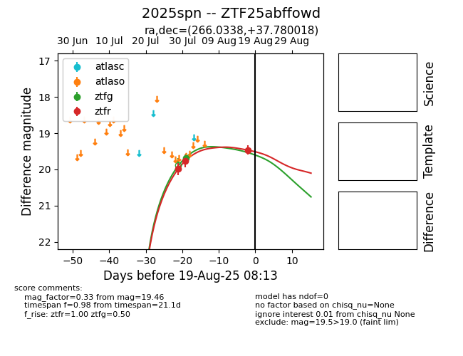

Target 2025spn at 2025-08-19 08:13, see:
FINK: fink-portal.org/2025spn
Lasair: lasair-ztf.lsst.ac.uk/objects/2025spn
ALeRCE: alerce.online/object/2025spn
TNS: wis-tns.org/object/2025spn
YSE: ziggy.ucolick.org/yse/transient_detail/2025spn
alt names
ZTF25abffowd (ztf,fink)
2025spn (tns,yse)
coordinates:
equatorial (ra, dec) = (266.0338,+37.78002)
galactic (l, b) = (63.1660,+28.87904)
photometry
last ztfg=19.68, ztfr=19.46
1 ztfg, 3 ztfr detections
